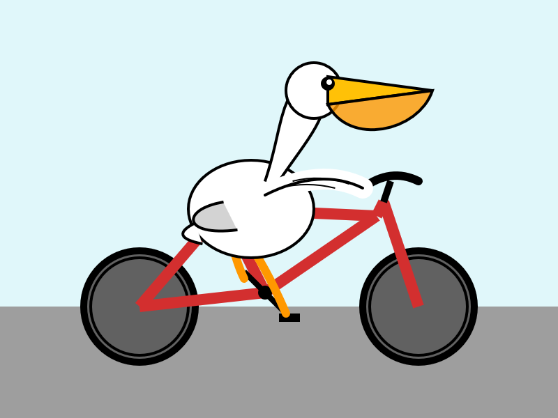

Zine#41
琐碎二三事
后面的 zine，我会移除「琐碎二三事」这部分内容。
我觉得 zine 应该主要用作信息分享，我的个人琐事算不上什么资讯，有的读者或许只希望获取信息，那么「琐碎二三事」对于他们来说或许是多余的。
而且「琐碎二三事」被我放在了开头，有时占据的篇幅还不小，尽管可以通过目录跳过，但我觉得没必要去增加读者的麻烦。
当然，依然会有一些琐事想要记录下来，后续我或许会另起一个系列，分享自己的一些生活日常。
这样，希望看 zine 的可以只看 zine，对我日常感兴趣的，也可以看看另一个系列。
更好的做法，或许是设置分类，读者可以按照分类看不同系列的文章，同时提供不同分类的 RSS 便于订阅。
不过目前我对这个博客构建工具还不是特别熟悉，tag、目录、分类的 RSS 我还不太清楚怎么弄比较好。
一旦改动，可能还会影响文章的路径，如果有人引用了我之前的链接，就有可能失效了，我想尽量避免。
zine 的一些结构我也改了，原来会用二级标题，现在都改成了 list，不知道看起来会不会更好一些？
如果你有什么想法也欢迎跟我交流～
看得开心啦～
News | Article
- 和 AI 辩论 可以不用顾及 AI 的感受，AI 也会提供很多参考内容，可以进一步发散思维。
-
关于 30 岁以上的游戏粉丝想玩游戏没时间的苦恼，他的解决方案是「今天想玩那个游戏一个小时，所以得早点努力把事情做完」
可是，早点努力把事情做完了，一到下班，就又有各种任务和会议塞进来了，或者进度被别人阻塞，「被迫」加班。
我就不加班，又会被打上不愿意付出的标签，列入裁员名单。
牛马有时真是无奈。
希望你有时间玩游戏！
It's rude to show AI output to people | Alex Martsinovich
作者提出了「人工智能礼仪」(AI etiquette)：
我对人工智能礼仪的理解是，人工智能生成的内容只有在被接收方采纳为己有或获得接收方明确同意的情况下，才能被传递。
关于「采纳」的具体含义以及何种行为可视为「同意」，还有很多值得探讨的地方，但我认为这一核心原则是正确的。
「我问了 ChatGPT，它这样回答：<…>」。
喂，让我先拦住你，兄弟，你现在做的事极其、极其无礼。
「我之前曾与 ChatGPT 就这个话题进行过一次有帮助的对话，如果需要，我可以分享对话记录给你。」
好的，发给我，我看看。
「我只用了 15 分钟就完成了这个拉取请求的氛围编码。请审核。」
那你先看看吧？
「这是我的公关声明，我出于各种原因做了这些事情。」
谢谢，我看看。
与「扰乱者」1不同，我们只有在主动选择的情况下才会接触到无意义的噪音。
请保持礼貌，不要向人类发送人工智能生成的文本。
和之前看到的另一个论点很像：
让我感到非常沮丧的是，与一些经常使用 AI 的人交流时，他们常常会说“我问了 ChatGPT，它说……” 停止吧！！！
如果聊天机器人教会了你什么并且你理解了，给我解释一下。
如果你不理解或不信任，那就别说了！
我很认同这两个观点，要对自己说的话负责，不要以「LLM 这么说……」作为借口，推卸自己的责任。
Deep Think in the Gemini app (via) Google released Gemini 2.5 Deep Think…
Google 最近 给模型新增了 Deep Think 的能力，每当新模型出现，Simon Willison 都会用它们 画一只骑自行车的鹈鹕。
我偶尔会看看他发的博客，这次 Gemini Deep Think 我觉得是目前画得最合理的。

图1 一只鹈鹕骑着红色的自行车 (图片来源：simonwillison.net) -
作者建议，如果是远程工作，可以考虑在聊天工具中给每个团队成员开一个频道，这个频道只能由那个成员发布信息，其他人可以回复。
像是个人微博，可以发个人对于项目的看法、近期爱好、对什么文章的思考等。
这个做法在作者团队中挺受欢迎的，可以加深团队成员之间的联系，也不至于干扰到别人。
感觉和现在一些博客做的事情很像，有的博客也会分享很多个人近况，经常看，就会增加和作者的熟悉感。
-
适当的压力或许会提高人的专注度，但是过大的压力可能会 对大脑的前额叶造成不可逆的损害，而因此可能会影响你的表现。
在面试的时候，往往需要在紧迫的时间里完成一些任务，而且可能还被面试官注盯着，此时人的压力较大，表现可能会比平时更差。
当你在这样的面试中表现不好时，不用觉得自己不够好，只是你的抗压能力没那么强，你只是容易受到压力的影响。
压力较小的时候，你依然可以做得很好。
My favourite German word | Daniele Procida
文章从 Gegenstand 2 这个德语单词开始，讨论了关于知识、文档、搜索信息等相关话题。
知识应该保持本身的完整性，而不是去迎合什么人，导致失去其完整性。
因为它保留了完整性，不去迎合任何人，因此也会产生对立性，人需要去适应它，而在这个过程中，才能去理解它，增加和知识之间的关系。
摘录
我最喜欢的德语单词是 Gegenstand，意为「物体」或「事物」。
Gegenstand，「站立对抗」。一个物体是与你对抗的东西。
它不是你。它在你之外。它有自己的规则。它不符合你的愿望。你撞上它，它会反抗。
物体不只是惰性物质 ⸺ 它们有其作用。
更妙的是，Gegenstand 展示了物体如何帮助定义我们。
我知道我是谁，我的界限在哪里，因为我能够遇到有阻力的物体。
这就是我了解并感知自己的身体、它在空间中的延伸、它在哪里结束以及世界在哪里开始的方式。
我之所以能够拥有自我，首先是因为有物体世界在那里与我对抗。
[…]
Gegenstand 赋予物体和现实一种完整性。
我必须尊重它们。
它们不会仅仅因为我希望就屈从于我的意志。
它们有其固有的性质。
如果我想用它们做些什么，我就必须按照它们的条件来做。
正是现实的阻力，才使得我们能够与事物打交道。
每一个曾经存在的工具和机器，都是通过成为一个顽固的、具有抵抗力的 Gegenstand 来发挥作用的。
设计、契合与阻力
好的设计之所以伟大，因为它能将坚硬的材料、不可逾越的限制，成功地塑造成一种对我们有用的形式。
拿起一件东西 ⸺ 一把刀、一台相机，任何东西 ⸺ 如果它能同时恰到好处地贴合手部并提供阻力，那会是一种享受。
好的衣服能贴合身体并提供阻力。
乐趣不仅在于契合，还在于契合与阻力。
糟糕的设计
令人不适地产生阻力的东西，比如不舒服的椅子，就是糟糕的设计。
它只有阻力，却无法契合。（我们的生活中已经有太多这样的了。）
但是，当事物被设计得过于契合时，也是糟糕的设计。
在 20 世纪 80 年代，实体产品开始出现一种奇怪的现象，并一直持续至今。
人们认为物品应该符合人类需求，这种观念开始被解读为它们应该字面上符合手的形状。
日常用品 ⸺ 自行车、雨伞、相机 ⸺ 的某些部分越来越多地被设计成手形握把。
如今的相机通常会有一个紧密贴合手指轮廓的握把。
从某种程度上说，这确实让相机更容易握持 ⸺ 但字面上只是一种方式。
只有用右手，并且只有以一种特定的方式，所以如果这不适合你 ⸺ 例如如果你有身体残疾 ⸺ 那就很不幸了。
以任何其他方式握持（握持相机的方式有很多种）都会变得更困难、不安全和不舒服。
（同样，几十年前流行的不对称电脑鼠标，用左手握持就像穿错脚的鞋子一样令人不适。）
这些物品过度拟合了。
奴性物品
我们的双手经过数百万年的进化，几乎可以安全舒适地握住任何大小合适的物体。
物体无需特别贴合手形；我们的双手乐于接触和握住任何不主动抗拒它们的东西。
事实上，它们不希望物体过度贴合。
过度贴合的物体是奴性的。
它们有一种令人毛骨悚然的特质。
它们卑躬屈膝，急于取悦，放弃了自身形态的自信，而这种自信本可以让我们用我们适应性极强的手以多种不同的方式握住它们。
它们的设计实际上并没有帮助我们。
看起来物体是为了适应手的需求而设计的，但实际上它是一个虚假的朋友 ⸺ 是手被迫顺从物体关于如何握持的单一想法。
人
同样的原则也适用于我们与人的关系。
人必须是 「Gegenstände」（客体），他们之所以与你对立，是因为他们有自己的完整性，不会仅仅因为你想要就顺从你的意愿。
朋友是能以恰当方式契合和抵制你的人，是你可以依靠他们来衡量自己的人。
朋友不是只会一味迎合你的人。
就像一个放弃自身完整性的物体一样，一个只会迎合你的人是令人毛骨悚然的 ⸺ 一个虚假的朋友。
知识和信息
知识和信息也是 Gegenstände。
它们有自己的规则。
完整性和对我们意志的抵抗是它们天性的一部分。
当它们符合我们的需求时，我们感到高兴 ⸺ 但如果它们变得顺从，被塑造成我们想要的样子，它们就会失去价值。
一个只告诉我们想听的新闻来源，就像一个这样做的人一样危险和奸诈。
有时我们可能不希望它们如此，但我们需要知识和信息作为客观事物来对抗我们，这样我们才能与它们建立健康的关系。
所有这些都旨在强调，知识和信息必须是我们世界中的客体，即 「Gegenstände」，它们本质上必须是能够与我们对立的事物。
Cool Bit
Printing a Book at Home with Minimal Equipment
准备纸张、打印机、胶水和裁纸刀，你就可以自己打印一本书。
除去设备的成本，作者打印一本 125 页的书大概只需要 7 块钱。
-
画一条鱼，和大家画的一起在水里游泳。
鱼会经过 AI 处理，还挺生动的。
我画的丑鱼哪去了啊？找不到 _(:3 」∠)_
-
HTML 爱好者使命
- 展示搭建和运行一个网站变得多么快速、简单和经济实惠。
- 展示构建一个简单的手工编码的「匠人」HTML 网站是多么令人愉悦。
- 提供关于如何构建和上传一个类似的业余网站并与社区分享的说明和指导。
-
研究表明，哭泣可以缓解一周的压力。
页面会随机给你一个让你掉泪的视频，帮你释放压力。
COFFEEMATIC PC | Doug MacDowell
作者将咖啡机和电脑结合到了一起，挺酷的。
-
好看的墨水颜色！
Tutorial | Resource
- Elements of System Design 系统设计要素。
- Claude Code System Prompt
-
Google 新发布的一款等宽字体，喜欢的话可以试试看。
-
一些给孩子设计软件时的建议，感受到了作者对于孩子的关怀。
- 尽量减少文字使用。
- 展示、并置和提示工具。
- 错误应易于纠正。
- 知道何时寻求成人帮助。
- 减少对精细运动控制的需求。
- 尝试解决手掌误触问题。
- 先简化，再增添趣味。
- 状态改变时保持视觉连贯性。
- 无广告变现，或不变现。
- 规划应用增长，无需社交分享。
- 儿童绝不应花钱。
Introduction to Computer Music
《计算机音乐导论》 最初是为计算机音乐一年级学习而设计的在线教材。
这本电子书旨在深入介绍相关信息，以期对作曲家、初级音频工程师以及其他对利用技术创作音乐感兴趣的专业或非专业音乐人有所帮助。
-
作者将参加了 Blaugust 的博客的 RSS 整理成一个列表，方便大家订阅。
Code Related
Play it, Sam. Play “Speech Synthesis” | David Bushell
作者给博客添加了语音播放功能，而且还能高亮正在读的单词。
利用了 Web Speech API 和 Web Components，Cool。
作者还写了一篇 Anatomy of a Web Component 剖析 Web Component。
What I learnt about making websites by reading two thousand web pages | alexwlchan
作者阅读了 2000 多个网页总结的一些网站制作知识，学到不少。
- The many, many, many JavaScript runtimes of the last decade | Whatever, Jamie
- Logical assignment operators in JavaScript: small syntax, big wins | Matt Smith
Onboarding for coding agents | holdenmatt
作者整理了一些它使用 agent 的经验:
不同 agents 有不同的约束文件，例如
CLUADE.md，一旦切换 agent，可能又要重新写很多东西。作者的做法是将 LLM 看作是新员工，然后将文档写到
README.md，有的还会按照领域，分类到README.<domain>.md，作为新员工的入职必读。然后在
CLAUDE.md中进行描述，让 agent 先读一遍所有的 README。问问自己：如果明天有一位新的软件工程师或设计师加入这个项目，在他们开始第一个任务之前，你会希望他们阅读什么？这就是你应该放在 README 文件中的上下文类型。
- 在
CLAUDE.md中不写规则和偏好，而是让 agent 去运行对应的校验和格式化命令，再让 agent 基于结果，完成问题修复。让 agent 自己完成 OODA 循环3。 环境全部由人来定义，包括技术栈、组件、库、数据库、部署设置、设计系统等。
这些环境定义了项目的大部分约束，也约束着 agent。
当需要调整环境的时候，可以和 agent 讨论，但最终还是由人来决定。
按照以上规则，作者的
CLUADE.md才十几行。作者的 CLAUDE.md
# CLAUDE.md This file provides guidance to Claude Code (claude.ai/code) when working with code in this repository. ## 📚 Onboarding At the start of each session, read: 1. Any `**/README.md` docs across the project 2. Any `**/README.*.md` docs across the project ## ✅ Quality Gates When writing code, Claude must not finish until all of these succeed: 1. `pnpm type-check` 2. `pnpm format` 3. `pnpm lint` 4. All unit tests (`pnpm test:run`) pass If any check fails, fix the issues and run checks again.
I Know When You're Vibe Coding
独属于 vide coding 的味道 ⸺ 不遵循项目已有规范、重复已有的功能、考虑了太多边缘场景，而这些场景其实已经在别的地方兜底了……
让人一眼就看出来你在 vide coding。
代码是人写的还是 AI 写的都无所谓，但要对代码负责，要关心代码的质量。
我不在乎代码是如何进入你的 IDE 的。
我希望你关心。
我希望人们关心质量，我希望他们关心一致性，我希望他们关心他们工作的长期影响。
LLMs 是工程学的奇迹，我对我创造它们的人们抱有最崇高的敬意。
但我们仍然需要构建软件，而不是将原型投入生产。
写出更好的提示。
给出更好的描述。
告诉 LLM 使用哪个库。
给它提供遵循的示例。
编写更小的文件。
没有新的原则 ⸺ 遵循已有的原则。
不要将代码库的可维护性留给模型的权重。
Tool | Library
- match-sorter JavaScript 中简单、预期且确定性的数组最佳匹配排序。
- Dependency cruiser 验证并可视化依赖项。规则由你定。支持 JavaScript、TypeScript、CoffeeScript。支持 ES6、CommonJS、AMD。
Emacs
- On Writing in Emacs | Jeremy Friesen
- Emacs Carnival 2025-08: Your Elevator Pitch for Emacs | Jeremy Friesen 新的主题是推销 Emacs。
- Emacs carnival: Writing experience | Professor Emeritus Eric S Fraga
- Emacs-Kick(starter) for Vim/Neovim Users
Emacs: The MacOS Bug | Alexander Przemysław Kamiński
当然，这可能只是一个白日梦，但我确信一件事：macOS 上的 Emacs 就像一辆挂着空挡的超级跑车。
-
Emacs Text Markup Language: text block rendering and flexible layout in Emacs buffers.
cool.
一些话 | 摘抄
OpenAI: Introducing study mode (via) New ChatGPT feature…
我仍然着迷于像 OpenAI 和 Anthropic 这样的 AI 实验室 仅仅通过精心应用系统提示就能获得如此大的影响力 ⸺ 在这种情况下，他们利用系统提示创建了平台的一个全新功能。
-
《豆汁记》这篇读完了，觉得女性作者的叙事里总有附近性，男性作者总是写史诗，写远方，要么就是写自己，少有中间的过渡地带，少见生活的过程，而女性作者似乎更关注生活。
相比之下，男作者的那种春秋笔法，大开大合，其实经不起细看，细微之处总显得空洞乏味，少些人味儿。
近年也常看女性作者的书，故事不很复杂，但总容易读出伤痛，因为太多的真相和苦难，此前从未读到过，鲜活而直接地写出来，成了另一个角度的叙事史，这正是很需要补全的。
Slipstitch, Queer Craft, and community spaces | alexwlchan
她的话也让我反思了我们社群空间的脆弱性 ⸺ 那些我们可以结识陌生人并因共同兴趣而建立联系的地方。
它们正变得越来越稀有。
随着每一寸土地都被迫进行越来越多的商业化，我们用于闲逛和结识人们的地方正在减少。
我们经常谈论成年后交朋友有多难 ⸺ 这部分是因为我们可能这样做的地方正在减少。
Vibe code is legacy code | Steve Krouse
当你凭感觉编写代码时，你积累技术债务的速度与 LLM 生成代码的速度一样快。
这就是为什么凭感觉编写代码非常适合原型和一次性项目：只有当你需要维护它时，它才算是遗留代码！
最糟糕的情况是让一个非程序员凭感觉编写一个他们打算维护的大型项目。
这相当于在没有首先解释债务概念的情况下给孩子一张信用卡。
如果你不理解代码，你唯一的办法就是让 AI 帮你修复，这就像用一张信用卡还清另一张信用卡的债务。
-
沟通的核心是信息的有效传递，这其中不仅包括内容本身，也包括对方的感受与接纳度。
将「说话直」等同于「真诚」，其实是对「真诚」的一种曲解。
真诚，意味着你的出发点是良善的、坦率的，但这并不意味着你必须放弃思考，选择最不加修饰、最可能伤人的方式来表达。
如果一个人明知自己的言辞可能会冒犯对方，却依然选择「直说」，这背后隐藏的逻辑其实是：
我已经预告了我的「不擅言辞」，所以无论我接下来讲了什么，你都应该理解我的「好意」，而不应计较我的「方式」。
这实际上是一种单方面的免责声明。
它将思考如何恰当表达的责任，转移给了听者，变成了要求听者必须具备「过滤刺耳言辞并领会其背后好意」的能力。
这显然是不公平的。
一个真正为自己言行负责的人，在意识到自己可能表达不当时，会选择更审慎的方式。
他可能会选择沉默，花更多时间去思考如何组织语言；或者，他会努力学习如何更准确、更体谅地进行沟通。
他的目标应该是「如何把话说好」，而不是「如何为自己说不好话的行为开脱」。
On Waking Early | Jeremy Friesen
我想到过去的朋友，他们会抱怨没有时间做我们都喜欢的事情。
我会在心里比较他们的日程和我的日程，而我却做了他们抱怨没时间做的事情。
我会发现我们有相似的工作时间、通勤时间、生活维护义务，但他们却没有养家糊口。
我优先安排时间去参与那些共同的爱好，而听起来他们却没有 ⸺ 这很正常。
但「我没有时间」这句话让我很不舒服。
我真想轻轻地摇醒他们说：「我想你有时间，只是你选择并一直选择优先处理其他事情，这没关系。」
我好奇，当我们不断内化“我没有时间”时，我们对自己造成了什么伤害？
-
开发者的意图是支持 SQLite 到 2050 年。
截至本文撰写之时，2050 年仍是 25 年后的事情。
没有人知道那段时间会发生什么，我们无法绝对保证 SQLite 在那时仍能保持可用或有用。
但我们可以保证：我们计划支持 SQLite 直到 2050 年。
这种长远的眼光会以重要的方式影响我们的决策。
[…]
我们的目标是让您今天存储在 SQLite 中的内容，对您的孙辈来说，也能像对您一样容易访问。
The 5 Blows to the Human Ego | dbreunig.com
- 哥白尼革命 (The Copernican Revolution)，让我们意识到我们并非宇宙的中心。
- 达尔文思想 (Darwinian thought)，它让我们意识到我们与动物并无二致。
- 弗洛伊德 (Freud) 的无意识理论 (unconscious)，让我们意识到我们并非完全掌控自我。
- 赛博格 (Cyborgs)、机器人 (robots) 和自动机 (automatons)，让我们意识到非人类也能完成人类的工作。
- 开普勒革命 (The Kepler revolution)，它让我们认识到行星和太阳系并非例外，而是普遍现象。
6 Weeks of Claude Code | Puzzmo
我相信，有了 Claude Code，我们正处于编程的「摄影引入」时期。
当一个单一的概念可以瞬间出现，而你只需通过代码审查和编辑技能将其塑造成你想要的样子时，手绘就不再具有同样的吸引力了。
Keep calm and carry on | The Boston Diaries
我发现令人担忧的是，在所有旨在「帮助」程序员工作的开发工具中，LLMs 是唯一一个（根据我的经验）由高管层强制要求所有人必须使用的工具！
我自己从未觉得 IDE 有用，但我的雇主也从未要求我使用它。
那么为什么 LLMs 会被强行推给我们呢？
我就是不明白。
对于 IDE，个人开发者，甚至一个团队，可以决定使用 IDE 是否值得投资，我对此没有异议。
我觉得 LLMs 也应该如此 ⸺ 那些觉得 LLM 值得使用的开发者应该能够使用它们。
但被高管层推动？
当高管层可能根本不知道编程是如何运作的时候？
这一定是某种由炒作推动的从众心理。
-
[…]当有人走进你，说「我很喜欢你」，「我很欣赏你」的时候，这就已经瞄准了你的背，准备盘你的脖子。
因为在这个世间，讲出这两句话之后的人，罕有不提出要求的。
希望他人喜欢，希望他人认同，希望他人尊重，这是人性，也是人性弱点。
是弱点就会被利用，你知道这个弱点，我知道这个弱点，神奇的是，每次利用这个弱点的时候它却多半能奏效。
「我喜欢你，所以你要听我的话」，这个逻辑不对但有效。
结论就是大家不要走得太近，距离保持在能听见这些话，但是绝对不至于对方可以一步就跨过来，跳上背，骑上脖子的程度。
-
一个观点，一个立场，一篇评论，它们所能激发的思考极少。
事实上，它们都是某个人思考的结果，更多人只是喜欢直接来拿结论，比附在自己身上，以此证明自己的聪明或者是远见。
-
快速的软件会改变行为。
当代码在几秒（或几毫秒）而不是几分钟内完成部署时，开发人员会更频繁地发布。
快能消除认知摩擦。
Raycast 在你输入完成之前就显示出正确的应用程序，这感觉就像你思维的延伸。
「快」意味着简洁 ，这在代码和内容都商品化的世界中更为罕见。
快速的软件无处遁形。
网络调用和依赖关系会通过延迟暴露出来，这种残酷的诚实迫使人们遵守纪律。
那些在速度方面做得非常好的公司往往拥有非常专注的产品。
这是因为让软件变快的努力往往需要剥离非必要的功能。
[…]
在一个痴迷于添加而非精炼的世界里，速度成为尊重的终极表达。
它表明：「我们已经深入思考了什么才是重要的，并剔除了所有其他不重要的东西。」
为了实现「快」，幕后往往需要进行复杂的操作。
[…]
快不仅仅是一项技术成就，它还标志着优先级和专注。
还有人写了 slow，但给我的触动不多。
多媒体
电影
看了《长安的荔枝》，我是看过书的，看电影感觉剧情有点仓促，人物之间的关系交代的不是很清楚，关系的加深来得有点突兀。
也有感动，苏谅最后虽然得不到什么，但在没有人来接李善德渡江时，他出现了，感叹人与人之间的情谊。
书中，在李善德陷入绝望时，杜少陵的一番话也是让我触动，他鼓励李善德去试试看，反正是死，为什么不尝试过再死呢？感叹古人的豪迈。
那段话的摘录
「你去过岭南没有？见过新鲜荔枝吗？」
「不曾。」
「你去都没去过，怎么就轻言无解？」
「唉，子美老弟，做诗清谈你是好手，却不懂庶务繁剧⸺ 」
杜甫又一次打断他的话：「我是不懂庶务，可你也无解不是？
左右都是死局，何不试着听我这不懂之人一次，去岭南走过一趟再定夺？」
李善德还没说话，杜甫一撩袍角，自顾坐到了对面：「我只会作诗清淡，那么这里有个故事，想说与良元知。」
李善德看了一眼韩承，后者歪了歪头，做了个悉听尊便的手势。
「我比现在年轻十岁的时候，一心想要在长安闯出名堂，报效国家。可惜时运不济，投卷也罢，科举也罢，总不能如愿，一直到了天宝十载，仍是一无所得。我四十岁生日那天，朋友们请我去曲江游玩庆祝。船行到了一半，岸边升起浓雾，我突然之间陷入绝望。这不就是我的人生吗？已经过去大半，而前途仍是微茫不可见。我下了船，失魂落魄，不想饮酒，不想作诗，就连韦曲的鲜花都没了颜色。我就像行尸走肉一样，漫无目的地走着，干脆朽死在长安城的哪个角落里算了。」
「不知不觉，我走到了城东春明门外一里的上好坊。其实那里既算不得上好，更不是坊，只是一片乱葬岗。客死京城的无主之人都会送来这里埋葬，倒也适合我的归宿。我随便找了个坟堆，躺倒在地，没过多久，却遇到了一个守坟的老兵。那家伙满面风霜，还瞎了一只眼，态度凶横得很。他嫌我占地方，把我踢开，自顾喝起酒。我问他讨了一口，两个人便聊了起来。他原来是个西域兵，还在长安城干过一段不良人，不过没什么人记得了。老兵如今就隐居在上好坊，说要为从前他被迫杀掉的兄弟守坟。那一天我俩聊了很久，他讲了很多从前的事，其中我最喜欢的一段，却不是故事。」
「老兵讲，他年轻时被迫离开家乡，远赴西域戍边。那是他第一次远别亲人，也是第一次上战场，何时会死也不知道。而军法管得极严，连逃都逃不掉。他一个年轻孩子，日夜惶恐惊惧，简直绝望到了极点。有一天，他在战场上被一个凶狠的敌人压住，眼看被杀，他发起狠来，用牙齿撕掉了对方的脸颊肉，这才侥幸反杀。 老兵突然明白了，既是身临绝境，退无可退，何不向前拼死一搏，说不定还能搏出一点微茫希望。 从那以后，他拼命地练习刀术、练习骑术，每天从高山一路冲下，俯身去拔取军旗。凭着这一口不退之气，他百战幸存，终于从西域安然回到这长安城里。」
「我当时听完之后，深受震动。我之境遇，比这老兵何如？他能多劈一刀在造化上，我为何不能？接下来的事情你们都知道了，我回去之后，振奋精神，写出了《三大礼赋》，终于获得圣人青睐，待制集贤院 ⸺ 虽说如今的成就，也不值一提，但自问比起之前，创作更有方向：我要把这些籍籍无名的人与事都记下来，不教青史无痕。于是我再次去了上好坊，请教老兵的姓名，希望为他写一些诗传。可老兵死活不肯透露姓名，只允许我把他当兵时的经历匿名写出来。于是我便写成了九首《前出塞》，适才那个故事，是在第二首，现在我把它赠与你。」
杜甫把毛笔抢过去，不及研墨，直接蘸了酒水，唰唰写了起来。
一会儿功夫，纸上便多了一首五言古诗4：
出门日已远，不受徒旅欺。
骨肉恩岂断，男儿死无时。
走马脱辔头，手中挑青丝。
捷下万仞冈，俯身试搴旗。
杜甫把笔「啪」地一声甩开，直直看向李善德，眼神锐利如公孙大娘手中的剑器。
「骨肉恩岂断，男儿死无时。既是退无可退，何不向前拼死一搏？」
李善德读着这酒汁淋漓的诗句，握着纸卷的手腕，突地一抖，仿佛有什么东西在胸中漾开。
然而耗费巨大人力物力运来的荔枝，最后贵妃也没吃上一颗。
我想贵妃本身对岭南鲜荔枝是不感兴趣的，只是有人说岭南荔枝好吃，就有人怂恿皇帝，而皇帝竟然听信了。
怂恿的人从中捞够了油水，而百姓则受尽折磨，也难怪唐朝由盛转衰。
另外还看了《浪浪山小妖怪 (2025)》，非常推荐去电影院看看。
观后感，涉及剧透
《中国奇谭》中有一集是《小妖怪的夏天》，而浪浪山小妖怪则是延展了里面那些小妖怪的故事。
故事讲的是小妖怪们走投无路，听说了唐僧的故事，就决定假扮取经四人组，混口饭吃，说不定还真能取得真经，成佛而长生不死。
虽说是假扮，却也真的帮助了村民除妖，保护了孩子。
面对大妖，自己坚持的事情也动摇过，但最后还是选择了做一个自己想成为的妖，哪怕会死，也勇敢面对大妖。
最后都打回了原型，变回之前，四个妖才开始相互介绍姓名，但还没说完，就变回原型，到底还是无名的妖。
就如片子的英文名，Nobody。
他们中间去化缘，去到一个庙里，老和尚出来迎接，假装不知道他们是妖，好好款待了一番，还送了件袈裟。
或许是看出他们也没什么恶意，给他们一份好意，或许小妖怪们也能传递下去。
有一幕，小猪妖看着大荧幕，似乎是对着观众说，为什么我们不能取经呢？
是呀，为什么是别人，而不能是自己呢，想做就勇敢去做，看看能走到哪里。
整部电影挺欢乐的，很多可爱的片段，让人不禁一笑，感觉既适合小朋友也适合大人看。
电影也具有一些教育意义，但我觉得没有很刻意，也没有很刻意的煽情，整体来说还是挺自然的，或许是故事情节比较连贯，不会让人觉得突兀。
就像是日本的一些动画和漫画，或许只是讲了一个故事，但是故事里的人是如何的，他们选择成为什么样的人，也会影响到读者，尤其是小朋友们。
与其刻意的引导，不如用故事让人耳濡目染，潜移默化地影响。
电影里有的片段也挺有趣的，例如找公鸡画师画画，有点像是美人鱼的那个名场面，每张画又都致敬了各种西游记的版本。
例如他们假扮的四人组，被妖怪错认成真四人组，于是享受了一场舒服的 SPA，收获了许多装备。
鼠妖那段打斗也有趣，鼠妖像是个流氓地痞，痞里痞气的。
中间还有一段三弦，和黑神话悟空里的那段三弦相近，也挺好听。
最后村民给小妖怪们立了个小庙，对联是「恩从善念起，德自好心来」，横批：「大恩大德」。
这是一部看完之后会觉得想推荐给身边人的动画，如果你还没看，推荐去看看！
视频
全网查无此歌?帮你找到被埋没的0评论宝藏歌曲丨涩谷系x灵魂乐丨HOPICO (22:44)
美国 DJ John 的声音很有磁性，日本 DJ TOMOKO 的声音很好听，周杨制作的视频很有 feel。
挑战听从 AI 指令生存一个月 | 诚为简 (14:10)
em… up 主的生活体验挺丰富的。
他附近的游泳月卡是 700，我附近的是 680，也真是不便宜，美团上买单次还便宜点。
视频最后的一句话：
「如果有一天，AI 真的强大到能给我们安排一个牛逼的人生，我们会去听吗？不，我们不会……人只会去做自己想做的事儿。」
别笑，你也过不了第二关《下一个是谁 5》03 (51:20)
下一个是谁 系列之前没怎么看过，看了这一季的，不错的下饭视频。
两车窄路相逢，奔驰女亮出证件逼男子让路！当场报出对方住址！【1745期】 (08:29)
还挺喜欢看「车祸警示录」的，车祸看多了，上路也小心了许多。
这一期开头的案子真是让人失望。
播客
E202｜对话肖风：在香港稳定币的沸腾时刻，一些回归常识的冷思考 (01:24:23)
刘锋讲得真清晰，播客内容涉及：
- 内地会从接受稳定币开始，接受整个 Crypto
- 既然开始接受稳定币，就必然接受公链，否则你的稳定币不会有全球竞争力
- 区块链到底解决什么问题
- 人类记账方法的三次变迁
- 稳定币被创造出来不是为了支付
- 香港又成为资本市场宠儿的两个原因
总之内容条理清晰，推荐一听。
音乐
ファンファーレと熱狂 | andymori | 2010-02-03
号角与狂热，封面应该是致敬 Sgt. Pepper's Lonely Hearts Club Band 吧，挤满了各种人物。
街角响起祝福的音乐。
昨天，我看不清前后，就这样降临到这狂热的城市。
怀揣着满满的希望与绝望，我走在今天的城市里。
一切都充满未知。
既然如此，那就让它保持未知，明天我仍将在这座城市里前行。
一张不错的摇滚专辑，旋律好听，也喜欢贝斯的演奏。
最喜欢里面的 1984。
オレンジトレイン （橙色列车）也喜欢。
CDjournal 的廿楽玲子评价道，本作混沌地交织着 20 多岁年轻人内心的混乱与愤怒、绝望与希望、毒舌与欢笑，是一部以盲目力量搅动停滞时代空气的新作
Another Time, Another Place | Bryan Ferry | 1974-07-05
Byran 的声音和 David Bowie 有点像。
专辑里的歌似乎是一些经典老歌的翻唱，但我知道的只有 You Are My Sunshine。
Smoke Gets In Your Eyes 的旋律听起来也很熟悉。
AllMusic 乐评人 内德·拉格特（Ned Raggett）在评价这张专辑时写道：
「整张专辑感觉比前一张更正式一些，但 Ferry 和他的团队，加上各种铜管和弦乐部分，将华丽的表演发挥得淋漓尽致，让一切都充满乐趣。
专辑结尾处出现了一首预示着未来个人专辑的歌曲 ⸺ 同名主打歌，一首 Ferry 原创的歌曲。」
-
看了《浪浪山小妖怪 (2025)》，其中的一首插曲就是这张专辑里的 飞升，音乐响起的时候觉得很熟悉，看了片尾才发现原来是聲無哀樂的歌。
专辑的风格是民族、电子、魏晋风骨和现代表达，可以一听。
-
一张不错的 city pop 专辑。
《VOGUE GIRL》副主编荒井现评价该作品称，尽管是 30 多年前的专辑，但它依然新鲜如初，毫不褪色，听着它就能让人联想到夏日景象。